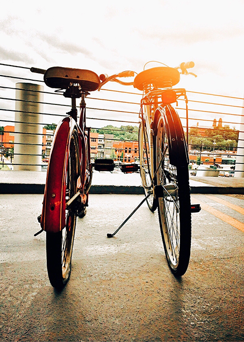

Basic Content
Out of this theme, we gained knowledge about development using video, dramaturgy, film language and media elements and recording and editing techniques.
Microsite
In this group project,we had to choose a theme related to cycling in Copenhagen.
We chose "The harbour circle" and we made a prototype website.
We made a treatment, a storyboard for a video that we later used in the microsite; then we made a documentation file and after that we created the microsite that we later on added improvements and the video.
Story without words
This was a group project and we created a short video with the purpose of telling a story without using words.Our theme was about daily routine and we wanted to show that time flyes and the bast way to live your life is by doing what you like to do.